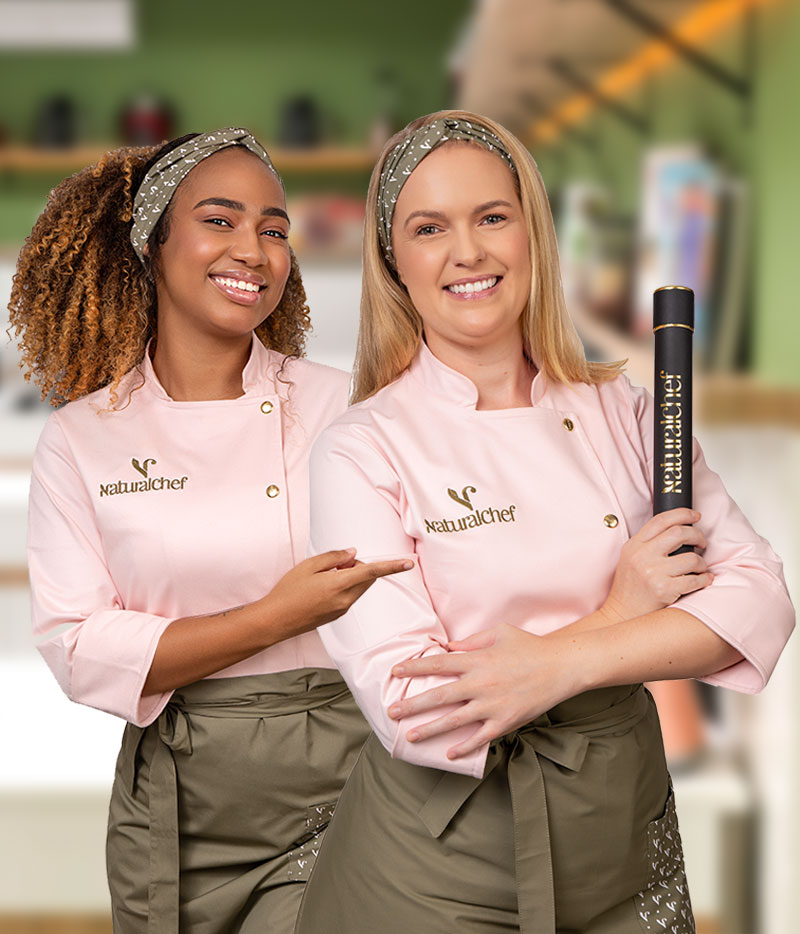

Escola de gastronomia saudável
Desde 2016, a Escola NaturalChef ensina a cozinhar utilizando técnicas da culinária saudável e uma cuidadosa seleção de ingredientes para a manutenção da saúde, além da prevenção e tratamento de doenças. Já são mais de 10 mil alunos pelo mundo transformando alimentos em terapia.
Diploma NaturalChef
Essa Formação em Gastronomia Saudável e Funcional foi desenvolvida para quem ama cozinhar e acredita que a alimentação saudável é a chave que faltava para uma mudança real na sociedade em que vivemos.
Você vai se encantar com as novas visões e tendências mundiais relacionadas à alimentação saudável, com embasamento científico e prático em todos os módulos. O curso une os conceitos de gastronomia, nutrição e empreendedorismo, adequando as técnicas dietéticas para criação de pratos, cardápios e receitas para saúde do seu dia a dia.
Agora você pode escolher o tipo que Formacão NaturalChef que deseja realizar. Seja no formato EAD, no conforto da sua casa, ou no Presencial, na cozinha da escola. Os dois formatos possuem a mesma grade curricular, mudando apenas a metodologia de ensino e os valores de cada modalidade.